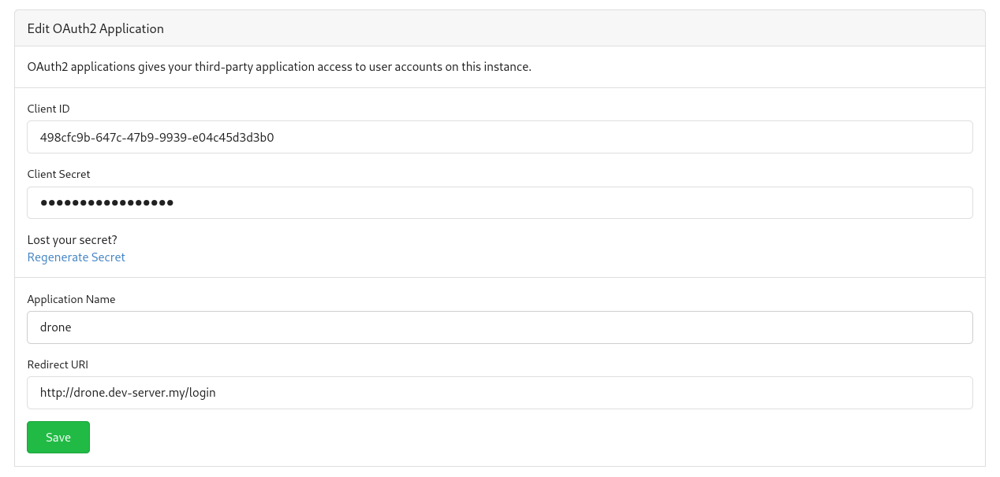

Drone installation ok k3s
Drone is a self-service Continuous Integration platform for busy development teams.
Project page: https://www.drone.io
Requirements
- k3s cluster
- kubectl
- helm
- git server installed on cluster
Installation
Create a namespace for drone server and runners
Install drone server
Gitea server should be already installed. Go to Settings -> Applications -> Create application 
Copy Client ID and Client Secret to server-values.yaml and add gitea server url:
DRONE_GITEA_CLIENT_ID
DRONE_GITEA_CLIENT_SECRET
DRONE_GITEA_SERVER
Add Helm repo:
Install drone server:
Install drone runner
More details here
Expose Drone installation
The DNS record pointing to cluster IP should be created, the host should be set to ingress.yaml (spec.rules.host)
Expose http UI using Ingress service: